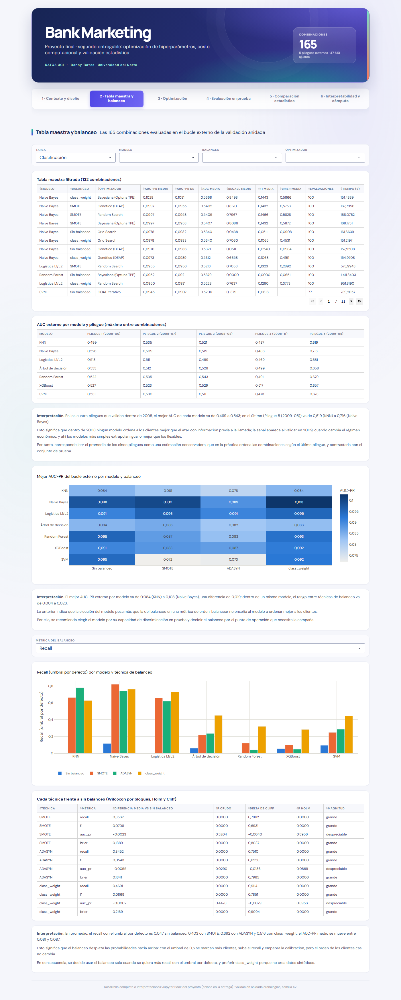

Pestaña 2 · Tabla maestra y balanceo#
La segunda pestaña reúne las 165 combinaciones evaluadas en el bucle externo, con filtros por tarea, modelo, balanceo y optimizador, y analiza el efecto de las técnicas de balanceo.

Las figuras son interactivas (se puede pasar el cursor sobre ellas) y las interpretaciones usan las mismas cifras que el dashboard y que el cuaderno.
2.1 Las mejores combinaciones#
| Modelo | Balanceo | Optimizador | AUC-PR media | AUC-PR DE | AUC media | Recall media | F1 media |
|---|---|---|---|---|---|---|---|
| Naive Bayes | class_weight | Bayesiana (Optuna TPE) | 0,1028 | 0,1081 | 0,5368 | 0,8498 | 0,1443 |
| Naive Bayes | SMOTE | Genético (DEAP) | 0,0997 | 0,0955 | 0,5405 | 0,8120 | 0,1432 |
| Naive Bayes | SMOTE | Random Search | 0,0997 | 0,0958 | 0,5405 | 0,7967 | 0,1466 |
| Naive Bayes | SMOTE | Bayesiana (Optuna TPE) | 0,0997 | 0,0953 | 0,5407 | 0,8086 | 0,1432 |
| Naive Bayes | Sin balanceo | Grid Search | 0,0978 | 0,0932 | 0,5340 | 0,0438 | 0,0511 |
| Naive Bayes | class_weight | Grid Search | 0,0978 | 0,0933 | 0,5340 | 0,7060 | 0,1065 |
| Naive Bayes | Sin balanceo | Genético (DEAP) | 0,0976 | 0,0936 | 0,5321 | 0,0511 | 0,0540 |
| Naive Bayes | class_weight | Genético (DEAP) | 0,0973 | 0,0939 | 0,5312 | 0,6658 | 0,1068 |
| Logística L1/L2 | SMOTE | Random Search | 0,0955 | 0,0956 | 0,5213 | 0,7053 | 0,1323 |
| Random Forest | Sin balanceo | Bayesiana (Optuna TPE) | 0,0952 | 0,0921 | 0,5379 | 0,0000 | 0,0000 |
| Logística L1/L2 | class_weight | Random Search | 0,0950 | 0,0931 | 0,5228 | 0,7637 | 0,1260 |
| SVM | Sin balanceo | GOAT iterativo | 0,0945 | 0,0907 | 0,5206 | 0,1379 | 0,0616 |
| Logística L1/L2 | class_weight | Grid Search | 0,0943 | 0,0934 | 0,5205 | 0,7739 | 0,1259 |
| Logística L1/L2 | class_weight | Genético (DEAP) | 0,0938 | 0,0936 | 0,5195 | 0,7488 | 0,1253 |
| Random Forest | class_weight | Random Search | 0,0934 | 0,0879 | 0,5278 | 0,2925 | 0,1262 |
| Modelo | Optimizador | RMSE media | RMSE DE | R² media | RMSE (s) media |
|---|---|---|---|---|---|
| XGBoost | Bayesiana (Optuna TPE) | 0,9060 | 0,0326 | 0,0198 | 270,3610 |
| XGBoost | Random Search | 0,9062 | 0,0327 | 0,0194 | 270,6820 |
| XGBoost | GOAT iterativo | 0,9067 | 0,0321 | 0,0183 | 270,6436 |
| XGBoost | Grid Search | 0,9068 | 0,0331 | 0,0181 | 270,6955 |
| XGBoost | Genético (DEAP) | 0,9079 | 0,0344 | 0,0158 | 270,6281 |
| Random Forest | Random Search | 0,9080 | 0,0331 | 0,0156 | 270,4630 |
| Random Forest | Grid Search | 0,9082 | 0,0345 | 0,0153 | 270,6833 |
| Random Forest | Genético (DEAP) | 0,9083 | 0,0330 | 0,0150 | 270,5584 |
| Random Forest | Bayesiana (Optuna TPE) | 0,9094 | 0,0344 | 0,0125 | 270,4607 |
| Random Forest | GOAT iterativo | 0,9099 | 0,0352 | 0,0115 | 270,7217 |
2.2 Desempeño por pliegue externo#
| Modelo | Pliegue 1 (2008-06) | Pliegue 2 (2008-07) | Pliegue 3 (2008-08) | Pliegue 4 (2008-11) | Pliegue 5 (2009-05) |
|---|---|---|---|---|---|
| KNN | 0,499 | 0,535 | 0,521 | 0,487 | 0,619 |
| Naive Bayes | 0,526 | 0,509 | 0,515 | 0,486 | 0,716 |
| Logística L1/L2 | 0,518 | 0,511 | 0,499 | 0,469 | 0,681 |
| Árbol de decisión | 0,533 | 0,512 | 0,526 | 0,499 | 0,658 |
| Random Forest | 0,522 | 0,535 | 0,543 | 0,491 | 0,679 |
| XGBoost | 0,527 | 0,523 | 0,529 | 0,517 | 0,657 |
| SVM | 0,531 | 0,530 | 0,511 | 0,473 | 0,673 |
Interpretación. En los cuatro pliegues que validan dentro de 2008, el mejor AUC de cada modelo va de 0,469 a 0,543; en el último (Pliegue 5 (2009-05)) va de 0,619 (KNN) a 0,716 (Naive Bayes).
Esto significa que dentro de 2008 ningún modelo ordena a los clientes mejor que el azar con información previa a la llamada; la señal aparece al validar en 2009, cuando cambia el régimen económico, y ahí los modelos más simples extrapolan igual o mejor que los flexibles.
Por tanto, corresponde leer el promedio de los cinco pliegues como una estimación conservadora, que en la práctica ordena las combinaciones según el último pliegue, y contrastarla con el conjunto de prueba.
2.3 Mejor AUC-PR por modelo y balanceo#
Interpretación. El mejor AUC-PR externo por modelo va de 0,084 (KNN) a 0,103 (Naive Bayes), una diferencia de 0,019; dentro de un mismo modelo, el rango entre técnicas de balanceo va de 0,004 a 0,023.
Lo anterior indica que la elección del modelo pesa más que la del balanceo en una métrica de orden: balancear no enseña al modelo a ordenar mejor a los clientes.
Por ello, se recomienda elegir el modelo por su capacidad de discriminación en prueba y decidir el balanceo por el punto de operación que necesita la campaña.
2.4 Efecto del balanceo#
| Técnica | Métrica | Diferencia media vs sin balanceo | p crudo | delta de Cliff | p Holm | Magnitud |
|---|---|---|---|---|---|---|
| SMOTE | recall | 0,3562 | 0,0000 | 0,7862 | 0,0000 | grande |
| SMOTE | f1 | 0,0708 | 0,0000 | 0,6931 | 0,0000 | grande |
| SMOTE | auc_pr | -0,0023 | 0,5204 | -0,0040 | 0,8956 | despreciable |
| SMOTE | brier | 0,1889 | 0,0000 | 0,8037 | 0,0000 | grande |
| ADASYN | recall | 0,3452 | 0,0000 | 0,7510 | 0,0000 | grande |
| ADASYN | f1 | 0,0543 | 0,0000 | 0,6558 | 0,0000 | grande |
| ADASYN | auc_pr | -0,0055 | 0,0290 | -0,0186 | 0,0869 | despreciable |
| ADASYN | brier | 0,1841 | 0,0000 | 0,7965 | 0,0000 | grande |
| class_weight | recall | 0,4691 | 0,0000 | 0,9114 | 0,0000 | grande |
| class_weight | f1 | 0,0869 | 0,0000 | 0,7851 | 0,0000 | grande |
| class_weight | auc_pr | -0,0002 | 0,4478 | -0,0079 | 0,8956 | despreciable |
| class_weight | brier | 0,2169 | 0,0000 | 0,9094 | 0,0000 | grande |
Interpretación. En promedio, el recall con el umbral por defecto es 0,047 sin balanceo, 0,403 con SMOTE, 0,392 con ADASYN y 0,516 con class_weight; el AUC-PR medio se mueve entre 0,081 y 0,087.
Esto significa que el balanceo desplaza las probabilidades hacia arriba: con el umbral de 0,5 se marcan más clientes, sube el recall y empeora la calibración, pero el orden de los clientes casi no cambia.
En consecuencia, se decide usar el balanceo solo cuando se quiera más recall con el umbral por defecto, y preferir class_weight porque no crea datos sintéticos.